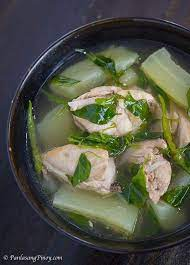

Welcome to My Website
Tinola Recipe
Ingredients:
- 1/2 kilo of Chicken
- 1 medium size of sayote, sliced into small pieces
- 4 cloves of garlic, chopped
- 1 medium size of white onion, minced
- a thumb of ginger, grated
- Chili leaves
- Malunggay leaves
- Chicken stock or boullion
- 5 cups of water
Steps:
- Saute garlic, ginger,and onion until it softens.
- Add the chicken. Then cook until chicken has browning on the outside.
- Add water and fish sauce. Let it boil.
- Add the chicken stock or boullion. Add the sayote and let it simmer.
- After 20 minutes, add the chili leaves and the malunggay leaves.
- After 5 minutes, add salt and pepper as needed.
